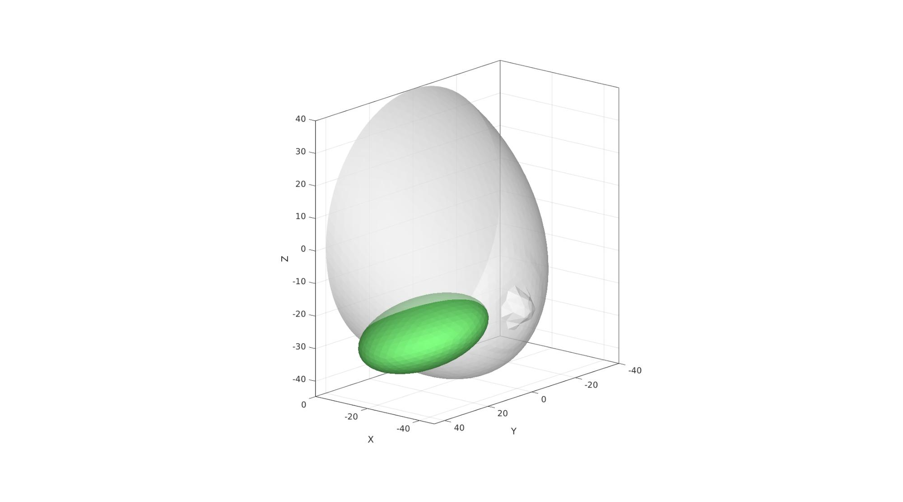
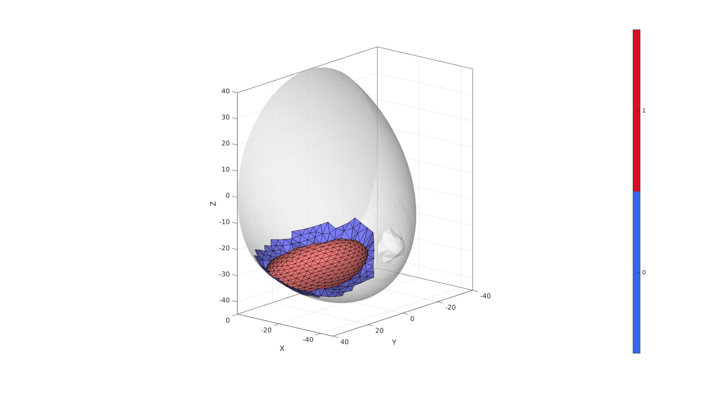
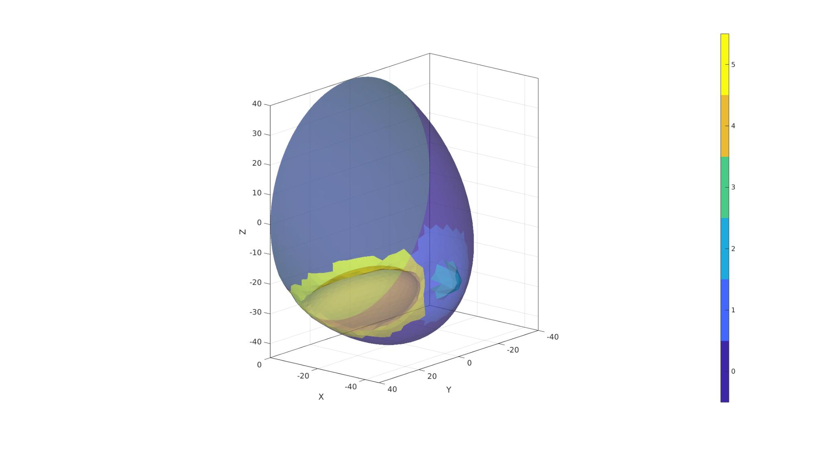
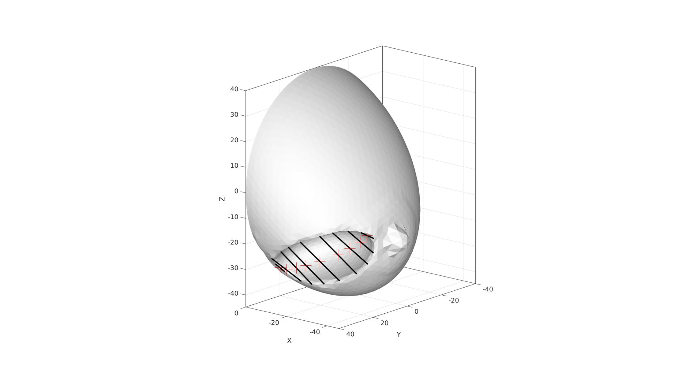
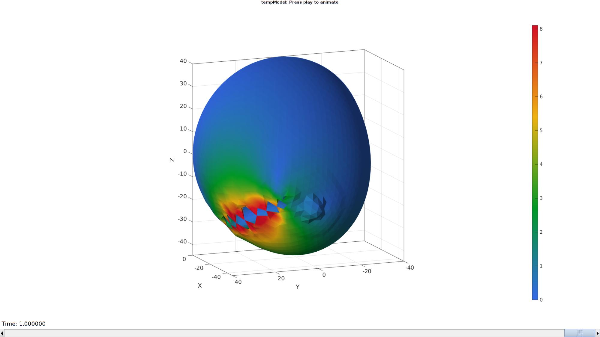

DEMO_febio_0052_breast_gap_close_01.m
Below is a demonstration for:
- Building geometry for a slab with hexahedral elements, and a triangulated sphere.
- Defining the boundary conditions
- Coding the febio structure
- Running the model
- Importing and visualizing the displacement results
Contents
- Keywords
- Plot settings
- Control parameters
- Create hemi-sphere
- Change shape of hemi-sphere to create basic breat model
- Rotate model
- Visualizing mesh using meshView, see also anim8
- Define boundary conditions
- Defining the FEBio input structure
- Quick viewing of the FEBio input file structure
- Exporting the FEBio input file
- Running the FEBio analysis
- Import FEBio results
Keywords
- febio_spec version 2.5
- febio, FEBio
- Surgery
- Breast, soft tissue
- static, solid
- hyperelastic, Ogden
- displacement logfile
- stress logfile
clear; close all; clc;
Plot settings
fontSize=15; faceAlpha1=0.8; faceAlpha2=0.3; markerSize=40; lineWidth=3;
r=40;
r1=r/2.5;
r2=r/7;
rm=mean([r1 r2]);
w=(r1-r2)/20;
h=r2;
dx=r/2;
nRefine=3; %Number of refine steps for hemi-sphere
volumeFactor=3;
Control parameters
% Path names defaultFolder = fileparts(fileparts(mfilename('fullpath'))); savePath=fullfile(defaultFolder,'data','temp'); % Defining file names febioFebFileNamePart='tempModel'; febioFebFileName=fullfile(savePath,[febioFebFileNamePart,'.feb']); %FEB file name febioLogFileName=fullfile(savePath,[febioFebFileNamePart,'.txt']); %FEBio log file name febioLogFileName_disp=[febioFebFileNamePart,'_disp_out.txt']; %Log file name for exporting displacement febioLogFileName_force=[febioFebFileNamePart,'_force_out.txt']; %Log file name for exporting force %Material parameter set c1_1=1e-3; %Shear-modulus-like parameter m1_1=6; %Material parameter setting degree of non-linearity k_factor=1e2; %Bulk modulus factor k_1=c1_1*k_factor; %Bulk modulus % FEA control settings numTimeSteps=10; %Number of time steps desired max_refs=25; %Max reforms max_ups=0; %Set to zero to use full-Newton iterations opt_iter=10; %Optimum number of iterations max_retries=5; %Maximum number of retires dtmin=(1/numTimeSteps)/100; %Minimum time step size dtmax=1/numTimeSteps; %Maximum time step size symmetric_stiffness=1; min_residual=1e-20; runMode='external';%'internal';
Create hemi-sphere
[F,V,C_hemiSphereLabel]=hemiSphereMesh(nRefine,r,1); %Construct hemi-shere mesh pointSpacing=mean(patchEdgeLengths(F,V)); % Get point spacing from mesh
Change shape of hemi-sphere to create basic breat model
indExclude=unique(F(C_hemiSphereLabel==2,:)); logicExclude=false(size(V,1),1); logicExclude(indExclude)=1; dt=sqrt(sum(V(:,[1 2]).^2,2)); logicHigh1=dt<r1 & ~logicExclude; logicHigh2=dt<r2 & ~logicExclude; C_skin=double(logicHigh1); C_skin(logicHigh2)=2; t=linspace(0,2*pi,500); x=rm*sin(t); y=rm*cos(t); vc=[x(:) y(:)]; [d]=minDist(V(C_skin==1,[1 2]),vc); dtt=d.^3; dtt=dtt-min(dtt); dtt=dtt./max(dtt); dtt=abs(dtt-1)*w; V(C_skin==1,3)=V(C_skin==1,3)+dtt; f=V(:,3); f=f-min(f(:)); f=f./max(f(:)); V(:,1)=V(:,1)+dx.*f; dtt=dt(C_skin==2).^3; dtt=dtt-min(dtt); dtt=dtt./max(dtt); dtt=abs(dtt-1)*h; V(C_skin==2,3)=V(C_skin==2,3)+dtt;
Rotate model
R=euler2DCM([pi -0.5*pi 0]); V=V*R;
Visualize breast model
[C_skin_F]=vertexToFaceMeasure(F,C_skin); C_skin_F=round(C_skin_F); C_skin_F(C_hemiSphereLabel==2)=max(C_skin(:))+1;
rCut=[10 20 20]; nRefineCut=nRefine; [Fs,Vs]=geoSphere(nRefineCut,1); Fs=fliplr(Fs); R_cut1=euler2DCM([0 0 0.*pi]); R_cut2=euler2DCM([-0.5*pi -0.1*pi -0.2*pi]); R_cut=R_cut1*R_cut2; Vs=Vs.*rCut(ones(size(Vs,1),1),:); Vs=Vs*R_cut; T_cut=[-25 25 -25]; Vs=Vs+T_cut(ones(size(Vs,1),1),:);
cFigure; hold on; gpatch(F,V,'w','none',0.5); gpatch(Fs,Vs,'gw','none',1); axisGeom; view([-140,16]); camlight headlight; drawnow;
[regionLabel]=simplexImIntersect(Fs,Vs,[],V,pointSpacing/2); logicCutVertices=~isnan(regionLabel); logicCutFaces=any(logicCutVertices(F),2); logicCutFaces=triSurfLogicSharpFix(F,logicCutFaces,3); Eb=patchBoundary(F(logicCutFaces,:),V); logicCutFaces=~logicCutFaces & ~any(ismember(F,Eb),2); logicCutFaces=triSurfLogicSharpFix(F,logicCutFaces,3); [regionLabel]=simplexImIntersect(F,V,[],Vs,pointSpacing/2); logicCutVertices=(regionLabel==1); logicCutFaces_s=any(logicCutVertices(Fs),2); logicCutFaces_s=triSurfLogicSharpFix(Fs,logicCutFaces_s,3); % Eb=patchBoundary(Fs(logicCutFaces_s,:),Vs); % logicCutFaces_s=logicCutFaces_s & ~any(ismember(Fs,Eb),2); % logicCutFaces_s=triSurfLogicSharpFix(Fs,logicCutFaces_s,3); Fs=Fs(logicCutFaces_s,:); [Fs,Vs]=patchCleanUnused(Fs,Vs); Eb=patchBoundary(Fs,Vs); %Get boundary edges indBoundary=edgeListToCurve(Eb); %Convert boundary edges to a curve list indBoundary=indBoundary(1:end-1); %Trim off last point since it is equal to first on a closed loop angleThreshold=pi*(120/180); %threshold for self triangulation [Fs,Vs,indBoundaryTop]=triSurfSelfTriangulateBoundary(Fs,Vs,indBoundary,angleThreshold,1); F=F(logicCutFaces,:); C_skin_F=C_skin_F(logicCutFaces,:); [F,V]=patchCleanUnused(F,V); Eb=patchBoundary(F,V); ind1=edgeListToCurve(Eb); ind1=ind1(1:end-1); Eb=patchBoundary(Fs,Vs); ind2=edgeListToCurve(Eb); ind2=ind2(1:end-1); % Fs=Fs(~logicCutFaces_s,:); [Fn,Vn]=regionTriMesh3D({V(ind1,:),Vs(ind2,:)},pointSpacing,0,'linear'); Fn=fliplr(Fn);
cFigure; hold on; gpatch(F,V,'w','none',0.5); gpatch(Fs,Vs,'rw','k',1); gpatch(Fn,Vn,'bw','k',1); axisGeom; view([-140,16]); camlight headlight; colormap gjet; icolorbar; drawnow;
[FT,VT,CT]=joinElementSets({F,Fs,Fn},{V,Vs,Vn},{C_skin_F,(max(C_skin_F)+1)*ones(size(Fs,1),1),(max(C_skin_F)+2)*ones(size(Fn,1),1)});
[FT,VT]=mergeVertices(FT,VT);
indRim=unique(FT(CT==5,:));
logicFacesSmooth=any(ismember(FT,indRim),2);
indSmooth=FT(logicFacesSmooth,:);
indRigid=FT(~ismember(FT,indSmooth));
clear cParSmooth;
cParSmooth.n=25;
cParSmooth.Method='HC';
cParSmooth.RigidConstraints=indRigid;
[VT]=patchSmooth(FT,VT,[],cParSmooth);
cFigure; hold on;
gpatch(FT,VT,CT,'k',1);
axisGeom; view([-140,16]);
camlight headlight;
colormap gjet; icolorbar;
drawnow;
V_regions=getInnerPoint(FT,VT); [regionA]=tetVolMeanEst(FT,VT); %Volume for regular tets inputStruct.stringOpt='-pq1.2AaY'; inputStruct.Faces=FT; inputStruct.Nodes=VT; inputStruct.holePoints=[]; inputStruct.faceBoundaryMarker=CT; %Face boundary markers inputStruct.regionPoints=V_regions; %region points inputStruct.regionA=regionA*ones(size(V_regions,1),1)*volumeFactor; % Mesh model using tetrahedral elements using tetGen [meshOutput]=runTetGen(inputStruct); %Run tetGen % Access model element and patch data Fb=meshOutput.facesBoundary; Cb=meshOutput.boundaryMarker; V=meshOutput.nodes; CE=meshOutput.elementMaterialID; E=meshOutput.elements;
%%%%%%%%%%%%%%%%%%%%%%%%%%%%%%%%%%%%%%%%%%%%% --- TETGEN Tetrahedral meshing --- 09-Jul-2020 15:53:45 %%%%%%%%%%%%%%%%%%%%%%%%%%%%%%%%%%%%%%%%%%%%% --- Writing SMESH file --- 09-Jul-2020 15:53:45 ----> Adding node field ----> Adding facet field ----> Adding holes specification ----> Adding region specification --- Done --- 09-Jul-2020 15:53:45 --- Running TetGen to mesh input boundary--- 09-Jul-2020 15:53:45 Opening /mnt/data/MATLAB/GIBBON/data/temp/temp.smesh. Delaunizing vertices... Delaunay seconds: 0.022219 Creating surface mesh ... Surface mesh seconds: 0.00403 Recovering boundaries... Boundary recovery seconds: 0.00659 Removing exterior tetrahedra ... Spreading region attributes. Exterior tets removal seconds: 0.002067 Recovering Delaunayness... Delaunay recovery seconds: 0.003109 Refining mesh... Refinement seconds: 0.062284 Optimizing mesh... Optimization seconds: 0.004863 Writing /mnt/data/MATLAB/GIBBON/data/temp/temp.1.node. Writing /mnt/data/MATLAB/GIBBON/data/temp/temp.1.ele. Writing /mnt/data/MATLAB/GIBBON/data/temp/temp.1.face. Writing /mnt/data/MATLAB/GIBBON/data/temp/temp.1.edge. Output seconds: 0.059526 Total running seconds: 0.164947 Statistics: Input points: 2094 Input facets: 4184 Input segments: 6276 Input holes: 0 Input regions: 1 Mesh points: 5085 Mesh tetrahedra: 25490 Mesh faces: 53072 Mesh faces on exterior boundary: 4184 Mesh faces on input facets: 4184 Mesh edges on input segments: 6276 Steiner points inside domain: 2991 --- Done --- 09-Jul-2020 15:53:46 %%%%%%%%%%%%%%%%%%%%%%%%%%%%%%%%%%%%%%%%%%%%% --- Importing TetGen files --- 09-Jul-2020 15:53:46 --- Done --- 09-Jul-2020 15:53:46
cFigure; hold on; hp=gpatch(Fb,V,Cb,'none',0.5); axisGeom; view([-140,16]); camlight headlight; icolorbar; drawnow;
Visualizing mesh using meshView, see also anim8
% meshView(meshOutput);
Eb=patchBoundary(Fb(Cb==4,:),V);
indRim=edgeListToCurve(Eb);
indRim=indRim(1:end-1);
nContract=18;
V_rim_resample=evenlySampleCurve(V(indRim,:),nContract,'linear',1);
[~,indMin]=minDist(V_rim_resample,V(indRim,:));
indPresribeStitch=indRim(indMin)';
V_stitch=V(indPresribeStitch,:);
cFigure; hold on; gpatch(Fb,V,Cb,'k',1); plotV(V(indRim,:),'b-','LineWidth',3); plotV(V_stitch,'y.','MarkerSize',25); axisGeom; view([-140,16]); camlight headlight; colormap gjet; icolorbar; drawnow;
V_stitch_temp=V_stitch-T_cut(ones(size(V_stitch,1),1),:); V_stitch_temp=V_stitch_temp*R_cut'; [~,indStart]=min((V_stitch_temp(:,2))); if indStart>1 V_stitch=[V_stitch(indStart:end,:); V_stitch(1:indStart-1,:)]; indPresribeStitch=[indPresribeStitch(indStart:end); indPresribeStitch(1:indStart-1)]; end indStitchOrigin=(1:round(nContract/2))'; indStitchEnd=nContract-(indStitchOrigin-1); indStitchPair=[indStitchOrigin indStitchEnd]; V_stitchGoal=patchCentre(indStitchPair,V_stitch); u1=V_stitchGoal-V_stitch(indStitchOrigin,:); u2=V_stitchGoal-V_stitch(indStitchEnd,:);
cFigure; hold on; gpatch(Fb,V,'w','none',1); % plotV(V(indRim,:),'b-','LineWidth',3); % plotV(V_stitch,'y.-','MarkerSize',25,'LineWidth',3); plotV(V_stitchGoal,'r+','MarkerSize',25); gpatch(indStitchPair,V_stitch,'none','k',1,3); axisGeom; view([-140,16]); camlight headlight; drawnow;
Define boundary conditions
%Supported nodes
logicRigid=Cb==3;
Fr=Fb(logicRigid,:);
bcSupportList=unique(Fr(:));
bcPrescribeList1=indPresribeStitch(indStitchOrigin);
bcPrescribeList2=indPresribeStitch(indStitchEnd);
Visualize BC's
hf=cFigure; title('Boundary conditions model','FontSize',fontSize); xlabel('X','FontSize',fontSize); ylabel('Y','FontSize',fontSize); zlabel('Z','FontSize',fontSize); hold on; gpatch(Fb,V,'kw','none',faceAlpha2); hl2(1)=plotV(V(bcSupportList,:),'k.','MarkerSize',markerSize); hl2(2)=plotV(V(bcPrescribeList1,:),'r.','MarkerSize',markerSize); hl2(3)=plotV(V(bcPrescribeList2,:),'g.','MarkerSize',markerSize); legend(hl2,{'BC support','BC Prescribe 1','BC Prescribe 2'}); axisGeom(gca,fontSize); camlight headlight; drawnow;
Defining the FEBio input structure
See also febioStructTemplate and febioStruct2xml and the FEBio user manual.
%Get a template with default settings [febio_spec]=febioStructTemplate; %febio_spec version febio_spec.ATTR.version='2.5'; %Module section febio_spec.Module.ATTR.type='solid'; %Control section febio_spec.Control.analysis.ATTR.type='static'; febio_spec.Control.time_steps=numTimeSteps; febio_spec.Control.step_size=1/numTimeSteps; febio_spec.Control.time_stepper.dtmin=dtmin; febio_spec.Control.time_stepper.dtmax=dtmax; febio_spec.Control.time_stepper.max_retries=max_retries; febio_spec.Control.time_stepper.opt_iter=opt_iter; febio_spec.Control.max_refs=max_refs; febio_spec.Control.max_ups=max_ups; febio_spec.Control.symmetric_stiffness=symmetric_stiffness; febio_spec.Control.min_residual=min_residual; %Material section febio_spec.Material.material{1}.ATTR.type='Ogden'; febio_spec.Material.material{1}.ATTR.id=1; febio_spec.Material.material{1}.c1=c1_1; febio_spec.Material.material{1}.m1=m1_1; febio_spec.Material.material{1}.c2=c1_1; febio_spec.Material.material{1}.m2=-m1_1; febio_spec.Material.material{1}.k=k_1; %Geometry section % -> Nodes febio_spec.Geometry.Nodes{1}.ATTR.name='nodeSet_all'; %The node set name febio_spec.Geometry.Nodes{1}.node.ATTR.id=(1:size(V,1))'; %The node id's febio_spec.Geometry.Nodes{1}.node.VAL=V; %The nodel coordinates % -> Elements febio_spec.Geometry.Elements{1}.ATTR.type='tet4'; %Element type of this set febio_spec.Geometry.Elements{1}.ATTR.mat=1; %material index for this set febio_spec.Geometry.Elements{1}.ATTR.name='breastNormal'; %Name of the element set febio_spec.Geometry.Elements{1}.elem.ATTR.id=(1:1:size(E,1))'; %Element id's febio_spec.Geometry.Elements{1}.elem.VAL=E; % -> NodeSets febio_spec.Geometry.NodeSet{1}.ATTR.name='bcSupportList'; febio_spec.Geometry.NodeSet{1}.node.ATTR.id=bcSupportList(:); febio_spec.Geometry.NodeSet{2}.ATTR.name='bcPrescribeList1'; febio_spec.Geometry.NodeSet{2}.node.ATTR.id=bcPrescribeList1(:); febio_spec.Geometry.NodeSet{3}.ATTR.name='bcPrescribeList2'; febio_spec.Geometry.NodeSet{3}.node.ATTR.id=bcPrescribeList2(:); %Boundary condition section % -> Fix boundary conditions febio_spec.Boundary.fix{1}.ATTR.bc='x'; febio_spec.Boundary.fix{1}.ATTR.node_set=febio_spec.Geometry.NodeSet{1}.ATTR.name; febio_spec.Boundary.fix{2}.ATTR.bc='y'; febio_spec.Boundary.fix{2}.ATTR.node_set=febio_spec.Geometry.NodeSet{1}.ATTR.name; febio_spec.Boundary.fix{3}.ATTR.bc='z'; febio_spec.Boundary.fix{3}.ATTR.node_set=febio_spec.Geometry.NodeSet{1}.ATTR.name; % -> Prescribed boundary conditions %Define mesh data and prescribed displacements bcNames={'x','y','z'}; nodeSetNames={febio_spec.Geometry.NodeSet{2}.ATTR.name,febio_spec.Geometry.NodeSet{3}.ATTR.name}; febio_spec.MeshData.NodeData=[];%Initialize so we can use end+1 indexing cc=0; for q=1:1:numel(nodeSetNames) switch q case 1 bcPrescribeMagnitudesStep=u1; bcPrescribeList=bcPrescribeList1; case 2 bcPrescribeMagnitudesStep=u2; bcPrescribeList=bcPrescribeList2; end nodeSetName=nodeSetNames{q}; for q_dir=1:1:3 %Loop over coordinates dimensions %Define mesh data for displacement increments c=numel(febio_spec.MeshData.NodeData)+1; %Current step index febio_spec.MeshData.NodeData{c}.ATTR.name=['displacement_',bcNames{q_dir},'_step_',num2str(q)]; febio_spec.MeshData.NodeData{c}.ATTR.node_set=nodeSetName; febio_spec.MeshData.NodeData{c}.node.ATTR.lid=(1:1:numel(bcPrescribeList))'; febio_spec.MeshData.NodeData{c}.node.VAL=bcPrescribeMagnitudesStep(:,q_dir); %Define prescribed displacements febio_spec.Boundary.prescribe{cc+q_dir}.ATTR.bc=bcNames{q_dir}; febio_spec.Boundary.prescribe{cc+q_dir}.ATTR.relative=1; febio_spec.Boundary.prescribe{cc+q_dir}.ATTR.node_set=nodeSetName; febio_spec.Boundary.prescribe{cc+q_dir}.scale.ATTR.lc=1; febio_spec.Boundary.prescribe{cc+q_dir}.scale.VAL=1; febio_spec.Boundary.prescribe{cc+q_dir}.relative=1; febio_spec.Boundary.prescribe{cc+q_dir}.value.ATTR.node_data=febio_spec.MeshData.NodeData{c}.ATTR.name; end cc=numel(febio_spec.Boundary.prescribe); end %Output section % -> log file febio_spec.Output.logfile.ATTR.file=febioLogFileName; febio_spec.Output.logfile.node_data{1}.ATTR.file=febioLogFileName_disp; febio_spec.Output.logfile.node_data{1}.ATTR.data='ux;uy;uz'; febio_spec.Output.logfile.node_data{1}.ATTR.delim=','; febio_spec.Output.logfile.node_data{1}.VAL=1:size(V,1); febio_spec.Output.logfile.node_data{2}.ATTR.file=febioLogFileName_force; febio_spec.Output.logfile.node_data{2}.ATTR.data='Rx;Ry;Rz'; febio_spec.Output.logfile.node_data{2}.ATTR.delim=','; febio_spec.Output.logfile.node_data{2}.VAL=1:size(V,1);
Quick viewing of the FEBio input file structure
The febView function can be used to view the xml structure in a MATLAB figure window.
febView(febio_spec); %Viewing the febio file
Exporting the FEBio input file
Exporting the febio_spec structure to an FEBio input file is done using the febioStruct2xml function.
febioStruct2xml(febio_spec,febioFebFileName); %Exporting to file and domNode
Running the FEBio analysis
To run the analysis defined by the created FEBio input file the runMonitorFEBio function is used. The input for this function is a structure defining job settings e.g. the FEBio input file name. The optional output runFlag informs the user if the analysis was run succesfully.
febioAnalysis.run_filename=febioFebFileName; %The input file name febioAnalysis.run_logname=febioLogFileName; %The name for the log file febioAnalysis.disp_on=1; %Display information on the command window febioAnalysis.disp_log_on=1; %Display convergence information in the command window febioAnalysis.runMode=runMode; febioAnalysis.t_check=0.25; %Time for checking log file (dont set too small) febioAnalysis.maxtpi=1e99; %Max analysis time febioAnalysis.maxLogCheckTime=10; %Max log file checking time [runFlag]=runMonitorFEBio(febioAnalysis);%START FEBio NOW!!!!!!!!
%%%%%%%%%%%%%%%%%%%%%%%%%%%%%%%%%%%%%%%%%%%%% --- STARTING FEBIO JOB --- 09-Jul-2020 15:53:52 Waiting for log file... Proceeding to check log file...09-Jul-2020 15:53:52 ------- converged at time : 0.1 ------- converged at time : 0.2 ------- converged at time : 0.3 ------- converged at time : 0.4 ------- converged at time : 0.5 ------- converged at time : 0.6 ------- converged at time : 0.7 ------- converged at time : 0.8 ------- converged at time : 0.9 ------- converged at time : 1 --- Done --- 09-Jul-2020 15:54:02
Import FEBio results
if runFlag==1 %i.e. a succesful run
% Importing nodal displacements from a log file [time_mat, N_disp_mat,~]=importFEBio_logfile(fullfile(savePath,febioLogFileName_disp)); %Nodal displacements time_mat=[0; time_mat(:)]; %Time N_disp_mat=N_disp_mat(:,2:end,:); sizImport=size(N_disp_mat); sizImport(3)=sizImport(3)+1; N_disp_mat_n=zeros(sizImport); N_disp_mat_n(:,:,2:end)=N_disp_mat; N_disp_mat=N_disp_mat_n; DN=N_disp_mat(:,:,end); DN_magnitude=sqrt(sum(DN(:,3).^2,2)); V_def=V+DN; V_DEF=N_disp_mat+repmat(V,[1 1 size(N_disp_mat,3)]); X_DEF=V_DEF(:,1,:); Y_DEF=V_DEF(:,2,:); Z_DEF=V_DEF(:,3,:); % [CF]=vertexToFaceMeasure(Fb,DN_magnitude);
Plotting the simulated results using anim8 to visualize and animate deformations
% Create basic view and store graphics handle to initiate animation hf=cFigure; %Open figure gtitle([febioFebFileNamePart,': Press play to animate']); hp1=gpatch(Fb,V_def,DN_magnitude,'none',1); %Add graphics object to animate hp1.FaceColor='Interp'; % gpatch(Fb,V,0.5*ones(1,3),'none',0.25); %A static graphics object axisGeom(gca,fontSize); view([-140,16]); colormap(gjet(250)); colorbar; caxis([0 max(DN_magnitude)]); axis([min(X_DEF(:)) max(X_DEF(:)) min(Y_DEF(:)) max(Y_DEF(:)) min(Z_DEF(:)) max(Z_DEF(:))]); camlight headlight; view([-112,12]); % Set up animation features animStruct.Time=time_mat; %The time vector for qt=1:1:size(N_disp_mat,3) %Loop over time increments DN=N_disp_mat(:,:,qt); %Current displacement DN_magnitude=sqrt(sum(DN.^2,2)); %Current displacement magnitude V_def=V+DN; %Current nodal coordinates % [CF]=vertexToFaceMeasure(Fb,DN_magnitude); %Current color data to use %Set entries in animation structure animStruct.Handles{qt}=[hp1 hp1]; %Handles of objects to animate animStruct.Props{qt}={'Vertices','CData'}; %Properties of objects to animate animStruct.Set{qt}={V_def,DN_magnitude}; %Property values for to set in order to animate end anim8(hf,animStruct); %Initiate animation feature drawnow;
% [M,G,bwLabels]=patch2Im(Fb,V_def,Cb,1); % M(M==1)=0.25; % M(M==3)=1; % M(M==0)=0.1; % M=M+0.25*rand(size(M)); % % voxelSize=G.voxelSize; % imOrigin=G.origin; % % L_plot=false(size(M)); % L_plot(:,:,round(size(M,3)/2)-7)=1; % L_plot(round(size(M,1)/2)-10,:,:)=1; % L_plot(:,round(size(M,2)/2),:)=1; % L_plot=L_plot & ~isnan(M); % [Fm,Vm,Cm]=ind2patch(L_plot,double(M),'v'); % [Vm(:,1),Vm(:,2),Vm(:,3)]=im2cart(Vm(:,2),Vm(:,1),Vm(:,3),voxelSize*ones(1,3)); % Vm=Vm+imOrigin(ones(size(Vm,1),1),:); % % cFigure; % subplot(1,2,1); hold on; % title('Closed patch surface','FontSize',fontSize); % % gpatch(Fb,V_def,CF,'k',0.5); % axisGeom(gca,fontSize); % camlight('headlight'); % colormap(gca,gjet(250)); colorbar; % % subplot(1,2,2); hold on; % title('Patch data derived image data (3 slices)','FontSize',fontSize); % % gpatch(Fb,V_def,'kw','none',0.25); % gpatch(Fm,Vm,Cm,'k',faceAlpha1); % % colormap(gca,gray(250)); colorbar; caxis([0 1]); % axisGeom(gca,fontSize); % camlight('headlight'); % drawnow;
end

GIBBON www.gibboncode.org
Kevin Mattheus Moerman, gibbon.toolbox@gmail.com
GIBBON footer text
License: https://github.com/gibbonCode/GIBBON/blob/master/LICENSE
GIBBON: The Geometry and Image-based Bioengineering add-On. A toolbox for image segmentation, image-based modeling, meshing, and finite element analysis.
Copyright (C) 2006-2020 Kevin Mattheus Moerman
This program is free software: you can redistribute it and/or modify it under the terms of the GNU General Public License as published by the Free Software Foundation, either version 3 of the License, or (at your option) any later version.
This program is distributed in the hope that it will be useful, but WITHOUT ANY WARRANTY; without even the implied warranty of MERCHANTABILITY or FITNESS FOR A PARTICULAR PURPOSE. See the GNU General Public License for more details.
You should have received a copy of the GNU General Public License along with this program. If not, see http://www.gnu.org/licenses/.